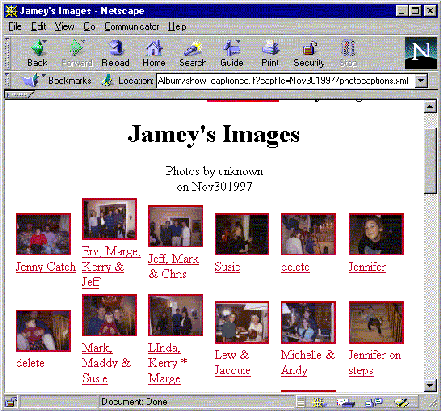

Slides for LinuxWorld 1999, Session 74
Note: you are viewing the plain form of a document that was designed to be
viewed as a slide presentation.
Note: The processed form of this
presentation looks best in Netscape with a screen size of 800x600, and all
toolbars turned off. Set the variable width font to 24-pt Times and the
fixed-width font to 18-pt Courier. It was designed to be presented using
a laptop computer and projection CRT.
For casual viewing or printing, use the plain HTML
form.
The PIA
An Open-Source Web-Based Document Processing System
Stephen Savitzky
Chief Software Scientist
Ricoh Silicon Valley
<steve@rsv.ricoh.com>
A Platform for Information Applications
| Goal:
| |
|---|
|
|
| |
| |
- Build web-based document-processing applications
- quickly and easily, with minimal programming
- using collections of active documents in XML
|
|
| Infoware |
| |
| |
- On a stable software base shared by all applications
- but easily extensible when necessary
|
|
| Software |
|
|---|
Documents and the Web
Documents: From Paper
Before computers:
- Documents were ink on paper.
- Creating, editing, and reading were done with simple tools.
- Processing was done by passing paper around
and putting more marks on it.
- Anyone could do it! People had control.
... to Computers
Computers changed things:
- Documents became data.
- Creating, editing, and reading the data requires an
application.
- Ever get e-mail you couldn't read?
- Computer processing is only what the application permits
- most other operations mean going back to paper
- or at least ``exporting'' text
- People no longer have control of their documents.
... to the Web
The Web changed things again.
- Documents became web pages in HTML.
- Creating and editing with any editor.
Reading with any browser
- Processing is at least possible
- because documents have standardized markup
- People are getting control back.
But the Web still has problems
We still don't have complete control:
- Processing still requires an application
- And building applications requires programming
- ... so users still don't control processing
...not yet!
Beyond the Web:
The goals of the PIA project are:
- to make it easy to develop document-processing applications
- to give control of documents back to their authors and users
- We will do this by means of a community
- of users, information designers, and programmers
- working together on a shared, standards-based, open platform.
Technical Details
slide
What we've done
Some of what we've done: Form Server

Used for all forms at Ricoh Silicon Valley.
Some of what we've done: Thin Servers

photo album (1 week),
web printer (2 weeks)
File + CD-RW (2 weeks),
kiosk (1 day)
But it's not just for the office:
Developers use documents, too!
- Browser's Buddy
- saves every URL with time and date.
- permanent; browser-independent
- Slide formatter (this one: 1 day)
- Code documentation
- pretty-printing, indexing, etc.
- Web-site management
The Road Ahead
The Open-Source Community
|
|
|
|
- The typical infoware application is mostly information --
perhaps 80% documents, 20% processing
- In the PIA, most or all of that processing can be done in the
documents using tags.
- With lots of information developers, the pool of infoware will grow
rapidly.
|
|
| Infoware |
some people |
do both |
Software |
|
|
|
- An application may need one or two task-specific tags
- e.g. digital signatures in the form agent
- But with an open-source community, someone probably had
the same need, and filled it.
|
|
|
|
Cool things to do with it
Personal/Developer tools:
- Webmaster's Assistant
- Open-Source project management package
- web site, mailing list, version control
- tracking bugs, fixes, and contributions
- I know I'm going to need this one!
- Templates for forms and agents
- construct whole applications by fill-in-the-blanks
- (could my wife's flower shop use it?)
- Personal Front Page
- weather, traffic, Linux news, ...
- look at SVLUG's page for an
example. They do it with PERL.
Cool things to do for workgroups
Small office/workgroup applications:
- Complete small-office forms package
- Our forms are great for a little R&D company, but...
- Accounting package
- Scheduling and project management
- Calendar, project tracking, ...
- Office front page
- business-related news and information
- office news, project status,
- meeting calendar
Cool things to do to it
Infrastructure: (strictly for hackers)
- Re-write the PIA in <your favorite language>
- Squeak / Guile / Python / DSSSL? / ...
- Revive the Perl version
- Port to C speed, portability, embedding
- Integrate with Apache (mod_pia)
- Integrate with standard XML/SGML parsers
- Easy, since it uses the DOM.
- totally change the tag language
- translate to Japanese, perhaps?
The Open Source Pitch
| Infoware
|
|
|
- Applications will come out of the community
- With lots of information developers, the pool of infoware will grow
rapidly.
| |
|
| |
|
|
|
|
- Meanwhile, the open-source process will improve the software base
| |
|
|
|
| Software
|
|
The best software is made by people who love it.
|
Conclusion
Where do we go from here?

| a community for information developers
|
| Infoware
|
|
|
- Provide resources for editors of infoware projects
- Mailing lists
- Project pages
- repository
|
|
|
|
|
|
|
|
|
- Coordinate the open-source development of PIA software base
|
|
|
|
|
| Software
|
|
www.RiSource.org
|
Linksbranch
Additional information.
TOC
Table of Contents:
&slidelist;
Copyright © 1999 Ricoh Silicon Valley
$Id$
Stephen R. Savitzky <steve@rsv.ricoh.com>